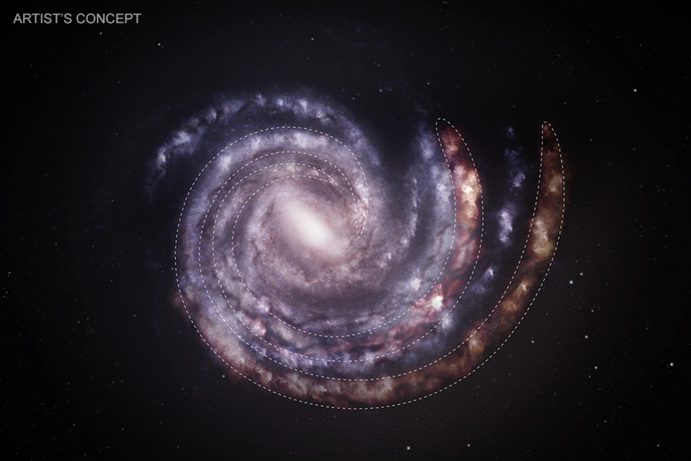

Solar System
Position for current date
Heliocentric ecliptic view; distances compressed
Lagrange points
Sun-Earth geometry schematic; L1/L2 distances exaggerated for readability
Analemma
12:00 local clock time; figure depends on year and selected location
Exoplanet comparison
Each panel is normalized to its own outer orbit; motion is schematic
Polaris & north celestial pole
North horizon view for the selected location; Polaris is shown with enlarged offset
Small Bodies
Mausrad oder Pinch zum Zoomen, ziehen zum Verschieben, Doppeltipp für Reset.
Tap an orbit to inspect it.
Schematic view; comet paths and belts are strongly compressed
Moon nodes & eclipse season
Node geometry and approximate eclipse-season cycle
Planetary conjunctions
Approximate conjunction minima within the selected date window
Meteor Streams
Activity windows and peak dates for major meteor showers
Constellation of the month
Seasonal highlight for Central Europe
Constellation year clock
Annual wheel of the monthly constellations
Seasons
Current position in the year; axial tilt shown schematically
Spacecraft
Schematic top-down flight paths; logarithmic scale
Visibility today
Night
Twilight
Day
Visibility window
Approximate for Berlin; based on solar elongation
−12 h+12 h
Retrograde phases
Approximate apparent geocentric motion from day to day
00:00
N
Mercury & Venus phases
Illumination, elongation and morning/evening appearance
ISS & bright satellites
Schematic mean low-Earth orbits; positions move with the selected date
Aurora chance Germany
Loading...
Live estimate for today; not linked to the date control
Jupiter System
Top 10 moons (illustrative; sped up)
Earth & Moon
Phase: New Moon (0%)
Moon
New Moon · 0%
Illumination
Cycle
🌑
New
🌓
First
🌕
Full
🌗
Last
Moon here
-
-
Eclipse geometry
Eclipses need new/full moon near a node.
Eclipses need new/full moon near a node.
Daylight Berlin
Sunrise
-
Sunset
-
Day length
-
Dawn
-
Dusk
-
Blue & golden hour
Blue hour
Golden hour
Day
Night
Planet systems
Selected major moons; total confirmed counts shown in the legend
Sky calendar
Next event: -
DLR-next today
Loading Bluesky post...
About